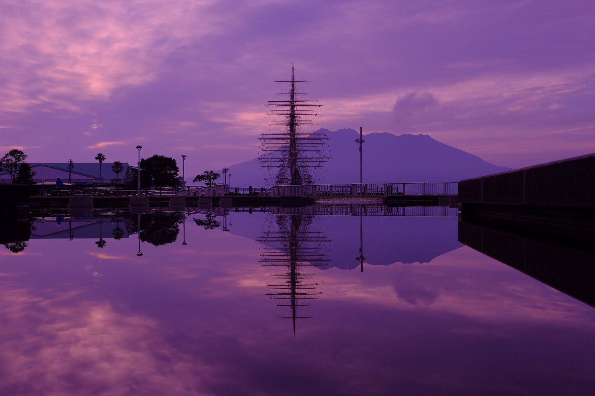

写真を記録から作品へ
皆さんは、普段から写真を撮っていますか？撮った写真を見返してみると、記録的な写真が多いのではないでしょうか。写真は、少しの知識と、思考があれば、何気ない日常を作品にすることができます。そんな、写真の魅力を３つ紹介します。
-
思い出を、綺麗に残せる


皆さんは、旅行やちょっとした外出などで、感動を覚えた風景や建物があると思います。 そして、その景色を写真で残そうと思考停止でシャッターを切るでしょう。しかし、撮 った写真を見返したとき、実物で見た景色と撮った写真との違いに落胆するという一連 の流れを体験した人も少なくないと思います。
左の画像は、上が何も考えずに撮った写真で、下が工夫した写真です。 シャッタースピードを長時間にすることで、上の写真よりもうまく水の流れを表現できています。 -
日常の視点が変わる
写真を趣味にすると、いろいろな視点から被写体を見るという癖がつきます。
左の写真は、上下、ほとんど同じ場所で撮った写真です。上の写真は、桜島を入れて終わりと、 ありきたりな写真です。一方、下の写真は、水たまりや噴水などを探して、なるべく低い位置か らシャッターをきることで、被写体の実物と水に反射した被写体の両方を撮ることができ、リア ルでは見れない不思議な写真となっています。 -
写真を撮るという行為が作業から作品作りになる
写真は、同じ天気、同じ機種、同じ時間、同じ場所でとってもいろいろな表現方法があります。
そして、写真には正解がありません。写真の良さはスポーツやテストのように点数では計れないので、とても自由です。
左に載っている写真は、同じところから撮った夜景の写真です。可もなく不可もなくの上の写真と比較して下の写真は、あえてピント合わせずに、百万ドルの夜景という言葉 があるように、宝石のような夜景をイメージして撮っています。
見る人によって受け取り方が違うのは、写真の面白さの一つです。